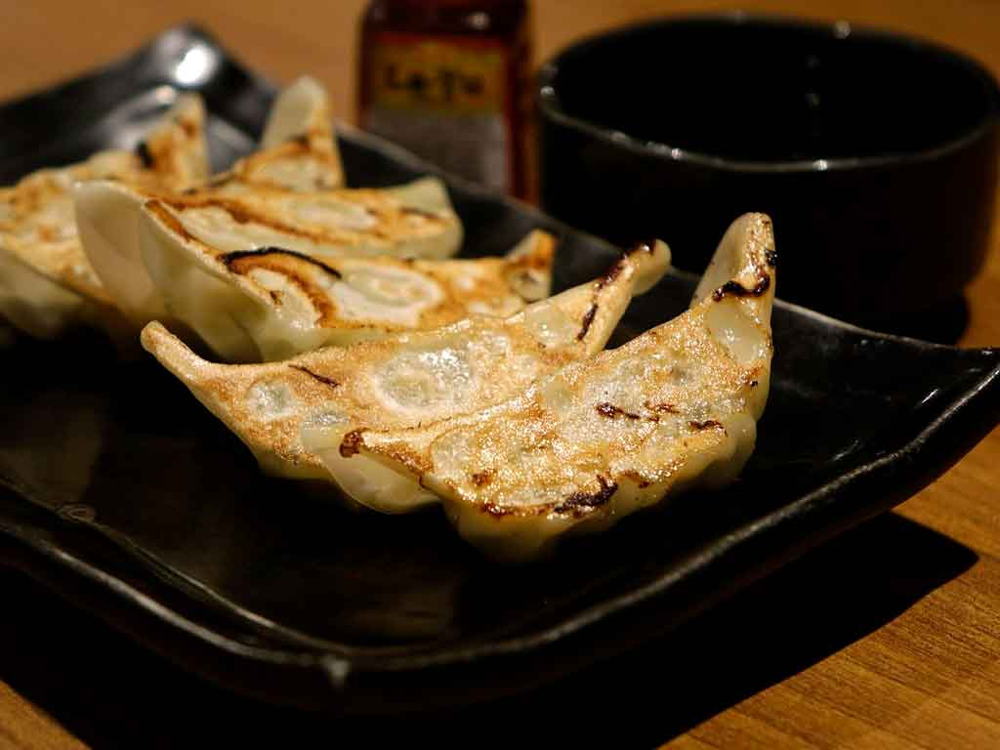

Sushi

Sushi é um prato da culinária japonesa que consiste em pequenos pedaços de arroz temperado com vinagre, açúcar e sal, cobertos ou recheados com peixe cru, frutos do mar, legumes ou ovos. O sushi pode ser servido com molho de soja, wasabi e gengibre em conserva. Existem vários tipos de sushi, como nigiri, maki, temaki, uramaki, sashimi e outros. Sushi é um prato muito popular e saudável, pois contém proteínas, ômega-3, vitaminas e minerais. Além disso, sushi é uma forma de arte, pois os chefs de sushi usam sua criatividade e habilidade para preparar e apresentar os pratos de forma bonita e apetitosa.
Temaki

Temaki é um tipo de sushi em forma de cone, feito com arroz, peixe cru e vegetais enrolados em uma folha de alga nori. É um prato tradicional da culinária japonesa, que surgiu no início do século XX como uma forma mais prática e rápida de servir o sushi. Temaki é comumente feito em casa, mas também pode ser encontrado em alguns restaurantes especializados em sushi. Temaki é uma opção saudável e saborosa, que pode ser personalizada com diferentes recheios e molhos. Para comer, basta segurar o cone com as mãos e morder a ponta, aproveitando a combinação de texturas e sabores.
Guioza
O guioza é um pastel de massa fina, geralmente frito ou cozido no vapor, recheado com carne moída e/ou legumes 12. Ele tem origem na China, mas se popularizou no Japão e em outros países da Ásia 13. O guioza pode ser servido como entrada ou dentro de um rodízio, acompanhado de molhos à base de shoyu 14. O guioza é uma ótima opção para sair da zona de conforto e aproveitar os sabores da culinária oriental. Você pode encontrar receitas de guioza na internet ou em livros especializados, ou experimentar em restaurantes de comida japonesa ou chinesa. Provavelmente vai gostar de guioza também.